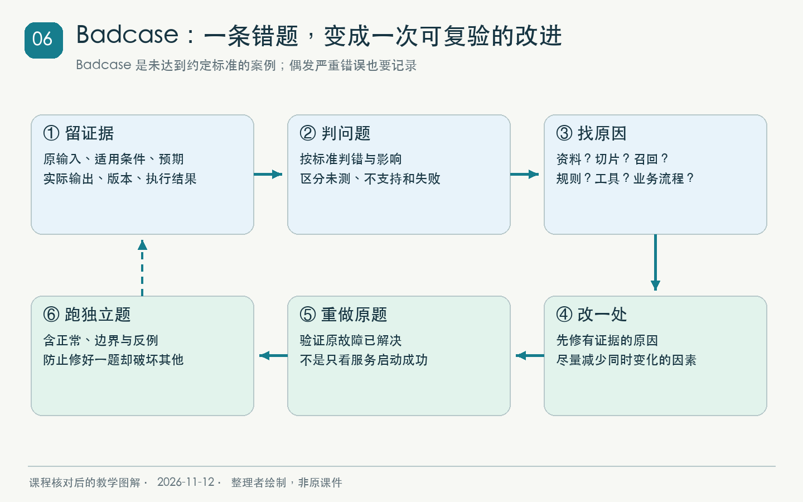

MAP / 先看完整路径
怎样使用
先顺着 1 → 6 看流程，再点击任意步骤进入演示。每步同时看“做什么、留下什么、容易错在哪里、怎样验收”。
流程是便于学习的整理顺序，实际项目可以往返。所有案例、日志和演算均为教学示例，不是你的实际项目成绩。

图为既有笔记的整理者教学示意；本页以操作流程为主。
完整实操 SOP
可以用左右方向键推进。步骤按钮允许回看；没有后台模型调用，演示结束不代表实际验收通过。
CHECK / 先判断，再看解释
一条错误很难复现，还需要记录吗？
带走一张实操卡
内容只在当前页，刷新不保存；下载不会提交给老师，也不会改写课程笔记。
ORAL NOTES / 主线外也要记
老师口头补充与游离知识点
- 10/25 P0086–P0102：规则、模型与人工裁判都需校准。
- 10/25 P0214：Hardcase是难度，不是低优先级。
- 10/25 P0275：删除无价值润色后同时复测质量与耗时。
- 2026-10-25 第二周学习笔记：目标 / 固定什么、拿什么测 / 出问题后查哪里
- 2026-10-25 第二周学习笔记：生成系统是否可靠 / 实际工作流输出及其请求、模型、提示词/参考图版本 / 先人工确认真错，再沿节点输入输出找原因；不凭末端结果直接判模型不行
- 2026-10-25 第二周学习笔记：评估器是否可靠 / 一批已人工核标的固定结果，含正例、反例与边界 / 比较裁判结论与人工依据，查规则、解析、模型识别能力及误判
- 2026-10-25 第二周学习笔记：27:12–28:22 / 不只填API key，要知道实际用了什么模型，按任务评测 / 核生成器和评估器各自配置及运行日志。便宜/贵、新/旧不能直接推出好坏；课堂品牌排序不作现行选型依据
- 2026-10-25 第二周学习笔记：28:37–29:49、02:39:35–39:46 / 卡点及时暴露，别等交作业才说目标不清 / 说明已尝试、实际报错、影响和需要的帮助，不只说“不会”
- 2026-10-25 第二周学习笔记：37:19–44:54 / 评测是可迁移的方法；数据要贴近业务，可先少量检查再扩量，用变量对照 / 9:1、10条/50条均为举例；自然样本和刻意挑战集分开统计。“不用脚本造语言”的课堂提醒，迁移为防机械套句，脚本仍可辅助组织、验证与运行
- 2026-10-25 第二周学习笔记：51:21–54:45 / 反复试验后把有效经验沉淀成SOP/skill；先知道目的和预期 / 不只是多试：记录假设、改动、版本和结果。由AI起草，人核业务标准；保存skill不代表永久学习
- 2026-10-25 第二周学习笔记：01:20:24–22:16 / 不要求一定酷炫；设计应与目标相关、能解释取舍 / “能讲理由”只证明思考，不代替可用性验证；不能把之前对红绿配色的点评写成禁用规则
- 2026-10-25 第二周学习笔记：01:26:08–29:18 / 软指标可在讨论和试验中修订；AI给十条也要人筛 / 先把抽象词变成可观察表现和正反例，记录变更理由，再用同版标准重评，不能边看分数边偷偷改线
- 2026-10-25 第二周学习笔记：01:50:56–54:45 / 可让AI快速起草，再针对问题研究、与业务方讨论 / AI不能取代真实业务方的政策与授权；学习时自己练写也有价值，不把效率建议变成“禁止自己写”
- 2026-10-25 第二周学习笔记：02:07:10–10:23 / 模型裁判可能误判，人工可复核改判，也可比较评估模型 / **纠正课堂“改掉即可、不用记录”的说法**：保留原评分、人工结论、依据和规则版本。误判不是生成系统的失败，但属于评测系统缺陷，不能删掉证据
- 2026-10-25 第二周学习笔记：02:18:08–24:16、03:15:26–16:26 / 找具体参考，外部介绍页与内部工作台分别设计 / 借鉴布局、层级与交互后按本任务验收；大厂采用不证明适合我们，不能声称别人的转化数据就是我们的依据
- 2026-10-25 第二周学习笔记：02:27:50–28:55 / 画面不符合时，查Dify节点日志及上游残存提示 / 上下文污染只是候选原因；还须查输入映射、参考图、实际模型及输出。没有日志就保留未知，不写“肯定提示词问题”
- 2026-10-25 第二周学习笔记：02:29:18–31:00 / 不为降低通过率故意造刁钻样本；还要人工复核 / 正常集测任务表现，挑战集测明确边界。猫不在现场、孩子在别处可以是有效条件，不能仅因少见判无效
- 2026-10-25 第二周学习笔记：03:13:13–14:54 / 未给材质信息而提示咨询客服，不应仅因提到“材质”误杀 / 规则区分“无依据断言”与“说明未知/引导核实”，配成对示例；有其他编造或违规则仍不能整体放行
沿用已核笔记的来源定位。本次没有重新回听音频；前两周口头内容部分依据录音整理纪要，不冒称逐字原话。完整语境、更多知识点和未核项见下方正文。
来源与公开范围
公开版来源与阅读边界 ↗公开版来源与阅读边界 ↗本页是按任务重组的学习视图；课程语境见按日期归档的笔记；独立正确性核查见上方《权威来源知识核查》，不要用课程笔记本身证明知识正确。平台参数与规则使用前再核。